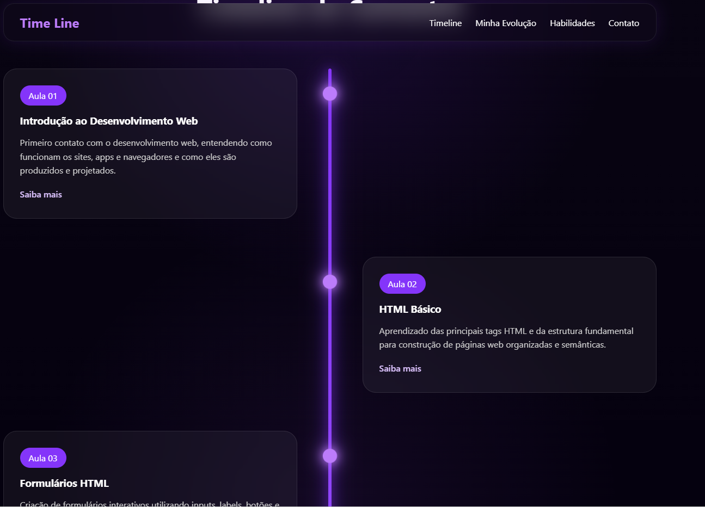

Projeto Integrador
Aplicando todos os meus conhecimentos sobre HTML e CSS para criar um projeto final.
O que aprendi
Nessa aula, aprendi a aplicar todos os meus conhecimentos sobre HTML e CSS para criar um projeto final. Aprendi a combinar diferentes técnicas e conceitos que aprendi ao longo do 1 semestre do curso para criar um projeto completo e funcional. Além disso, tive a oportunidade de praticar minhas habilidades de desenvolvimento web, o que me ajudou a entender melhor como os diferentes elementos e estilos interagem entre si em um projeto real.
O que desenvolvi
Nessa aula, consegui desenvolver um projeto final aplicando todos os meus conhecimentos sobre HTML e CSS. Desenvolvi um projeto completo e funcional, combinando diferentes técnicas e conceitos que aprendi ao longo do 1 semestre do curso. Além disso, pratiquei minhas habilidades de desenvolvimento web, o que me ajudou a entender melhor como os diferentes elementos e estilos interagem entre si em um projeto real.
Projeto(s)

Conhecimentos Adquiridos
- Integração de HTML e CSS 100%
- Criação de projeto web 100%
Desafios
Nenhum problema ou desafio encontrado.